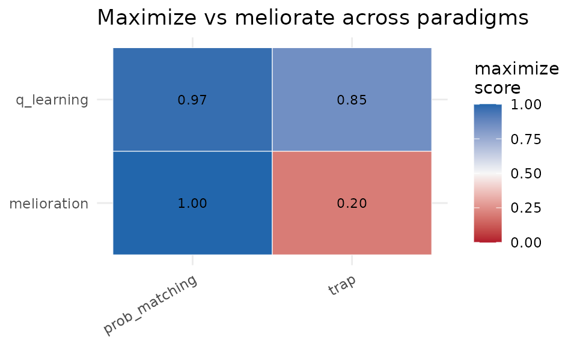

Differentiating reward maximization from melioration
Source:vignettes/operantlunar.Rmd
operantlunar.RmdThe question
Two accounts describe how choice tracks reinforcement. The law of effect says behavior moves toward the action with the highest long-run return: reward maximization. Melioration (the mechanism behind the matching law) says behavior moves toward the action with the higher local return, evaluated myopically. On many environments the two coincide. They come apart only when choosing an option changes the local returns, or when a smaller-sooner reward competes with a larger-later one.
operantlunar holds the learning skeleton fixed and swaps
the update rule, then runs each rule through operant paradigms designed
to separate the two accounts.
The rule library
Every rule plugs into every paradigm through a registry:
names(agent_registry())
#> [1] "q_learning" "sarsa" "expected_sarsa"
#> [4] "double_q" "boltzmann_q" "actor_critic"
#> [7] "model_based" "melioration" "melioration_rate"
#> [10] "win_stay_lose_shift"
sapply(c("q_learning", "melioration", "melioration_rate", "win_stay_lose_shift"), agent_kind)
#> q_learning melioration melioration_rate win_stay_lose_shift
#> "maximizer" "meliorator" "meliorator" "heuristic"
ag <- make_agent("double_q", n_actions = 2L, horizon = 30000L)The melioration trap
The trap is the canonical dissociation: option A pays more, but the more A is chosen the worse both options become. The rate-maximizing allocation differs from the matching allocation.
tr <- melioration_trap()
tr$optimum()
#> $x_opt
#> [1] 0.4
#>
#> $rate_opt
#> [1] 0.48
tr$matching_point()
#> $x_match
#> [1] 0.8
#>
#> $rate_match
#> [1] 0.4A reward maximizer settles near the optimum; gradient-bandit melioration is pulled to the matching point and earns less. (Full run elided for build speed.)
melioration_trap_experiment(n_steps = 60000)More paradigms
prob_matching_experiment(probs = c(0.75, 0.25)) # matching vs exclusive choice
self_control_experiment() # delay discounting
drl_experiment() # low-rate responding
devaluation_experiment() # habit vs goal-directedProbability matching is produced by the rate-tracking rule, not by the gradient-bandit melioration (which maximizes on a stationary bandit). Self-control and reinforcer devaluation cleanly separate myopic from far-sighted control.
The differentiation matrix
The capstone scores each rule on each paradigm in
[0, 1], where 1 is reward-maximizing and lower values
indicate matching or suboptimal behavior. A small two-rule, two-paradigm
version runs here; the full instrument uses more rules, more paradigms,
and a larger step budget.
dm <- differentiation_matrix(
rules = c("q_learning", "melioration"),
paradigms = c("prob_matching", "trap"),
n_steps = 5000
)
dm$wide
#> # A tibble: 2 × 3
#> rule prob_matching trap
#> <chr> <dbl> <dbl>
#> 1 q_learning 0.971 0.85
#> 2 melioration 0.999 0.200
plot_differentiation_matrix(dm)
Function approximation and LunarLander
Tabular state binning is the binding constraint on the LunarLander
comparison. Hashed tile coding with linear semi-gradient agents removes
it, and a generic Gymnasium adapter extends the same comparison to other
environments. These require a configured Python via
lunar_setup() and are not run here.
lunar_setup("/usr/bin/python3")
differentiate_fa("CartPole-v1", n_train = 300)
differentiate_gym("FrozenLake-v1", make_kwargs = list(is_slippery = FALSE))Reading the results honestly
No single paradigm proves a rule maximizes; each isolates one failure mode of myopic control. The trap and self-control catch gradient-bandit melioration; probability matching catches the rate-tracking rule; differential reinforcement of low rates separates annealed-exploration value rules from persistently stochastic ones. The matrix is a fingerprint, not a scalar verdict.